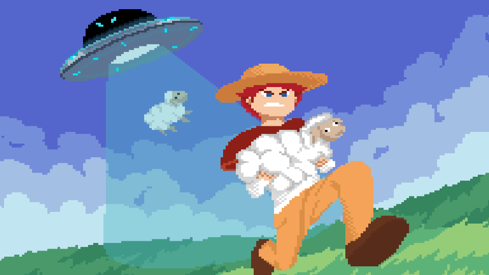
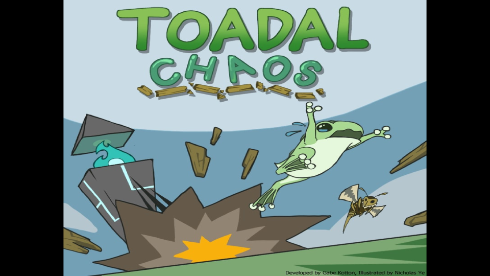
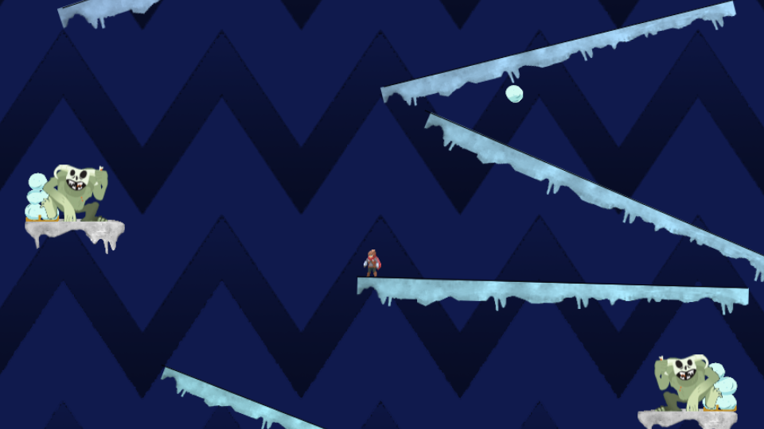
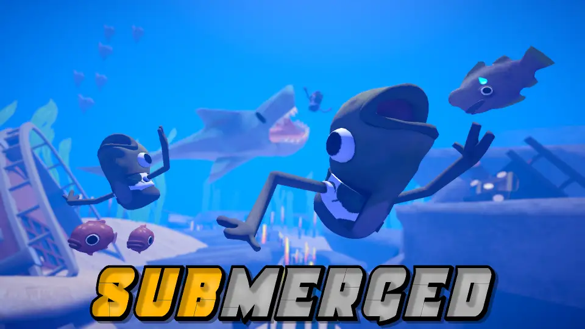
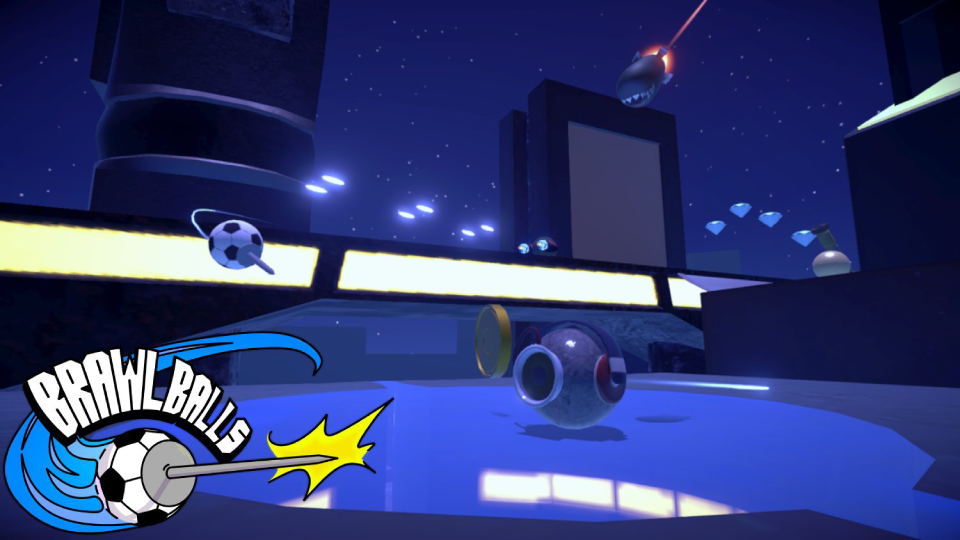
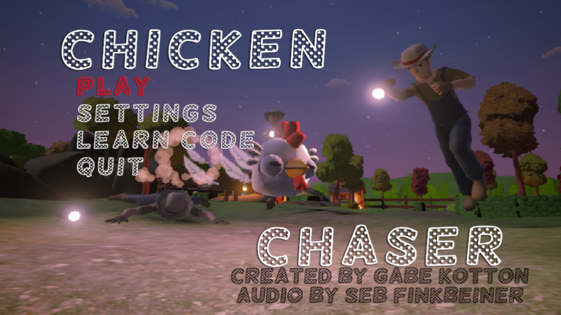
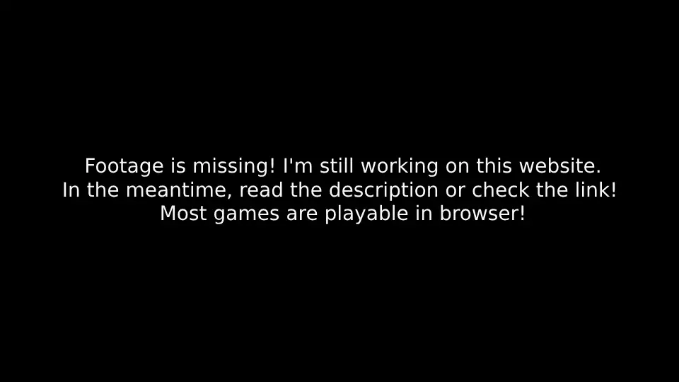
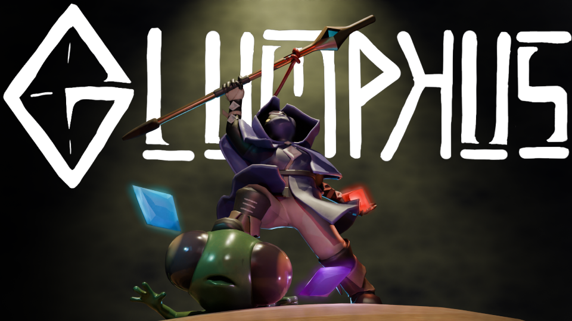
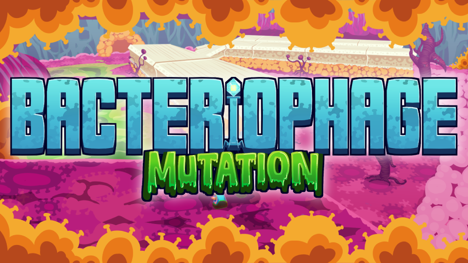

Selected Projects

Sheep Herder was the first game I created for RP4K, made in 2022. Sheep herder is a simple game, smaller than 250 lines of code, that is aimed at teaching the basics of Java and Processing, while also exploring concepts such as linked lists. The course is designed to be easy to learn while still being enjoyable, providing an opportunity for kids of any age to get started learning code. Nicholas Ye created the art for this game.

Toadal Chaos was the third game I created for RP4K, made in 2024. My core philosophy while creating Toadal Chaos was to encourage Object-Oriented Programming, and allowing students to take control over their code. In this course, students learn about and repeatedly use concepts such as composition, abstraction (interfaces too), and inheritance to leverage the efficient code. The art for Toadal Chaos was created by Nicholas Ye.

Polar Peril 2 is a re-make of one of RP4Ks games, Polar Peril (Crazy right??). The original game features ~8 different classes, with no inheritance and requires students to copy and paste code between their classes. Collisions are done manually class to class, I.E. the snowball to the player. The original version of the game is essentially Donkey Kong, and I personally didn't find the game fun to make, so when I was asked to re-do it, I jumped at it. I created Polar Peril 2 in 2024.

Submerged is a VR social sandbox game developed in two months under contract of Squido Studios, during this time our YouTube and twitch reached 500+ followers, and 750+ on discord. Unfortunately, we didn't get to finish this game due to insufficient budget, and the game was never published as Squido may decide to bring the IP back someday. As of 2025-10-23, all development has halted. While Submerged was one of the more impressive games I've worked on, it's unfortunately we may never see it come to life.

Brawl Balls is an Action Multiplayer Game created in a month by 6 people. It is one of my favourite projects, and I think is an excellent showcase of my knowledge of Unity. My major role on this project was the main menu, local splitscreen, and some of the netcode. I also was responsible for many of the particle effects, and project optimization. As of April 2025 Brawl Balls is still in development, and we hope to see it on app stores in September, and eventually all devices as the game is also cross-platform.

Chicken Chaser is another game developed for RP4K, created in 2023. Chicken Chaser was designed to be an entry point into Unity, teaching students the correct way to do things. The course teaches students the fundamentals of Unity, understanding that everything is a GameObject composed by Components, and understand the usage of many common components, and creating new components. This project also teaches scriptable objects, and while not emphasized, shows students what a properly structured program should look like using design patterns to manage flow. As with all my Unity games, Chicken chaser works on every platform. Music was created by Sebastian Finkbeiner.

Dice Duel is another game created for RP4K, created in 2025. Dice Duel was a special request from the CEO to create a game that teaches students the binomial distribution. Dice duel while having a strong emphasis on statistics and math, also emphasizes good code practices and abiding by SOLID principles. In my opinion, it's one of the most valuable courses a student could take while at RP4K, however, I also think that the gameplay is not for everyone, and it's definitely a challenging course. Another notable feature of Dice Duel is learning how to make re-usable components, such as a "Drag and Drop" feature. While the game can be played in its current state, it can be very confusing; hopefully one day I add a tutorial so people can experience the game properly. Art created by Nicholas Ye, Sound and Music by Sebastian Finkbeiner
Special Defision was created in 2023 and was made alongside a student at RP4K, this student was particularly bright, and requested we make a game using DOTS. This game was created over the span of 18 weeks, and was my first proper experience with DOTS. While the project isn't anything crazy, the FPS is. And even though the code is incredibly complex, I look forward to the next time I make a DOTS game, the optimization is just too good.

Glumphus was one of my favourite projects to work on. Glumphus is a multiplayer magical extraction shooter, designed to make extraction games easier to get into and more player friendly. Created at Ontario Tech University in 2024, in our group of 7, my main responsibility was project management, VFX, Cinematics, some of the netcode, and the infrastracture for the Gem Ability System (Yes we used GAS too). This was my first project in Unreal Engine, and I think it looks beautiful. Admittedly, it's a bit taxing to run, and is unplayable because the servers have been shutdown, but you can watch some of our old videos if you're curious.

Bacteriophage is a platformer game created at OTU. Working on Bacteriophage was interesting as our group size was 14 members, if I could go back, I would completely change how the team was handled and the game was created. My main role on the team was VFX, and programming where I aided with ideation and creation of a GAS combat system which would enable designers to play animations, effects, noises or run logic from a simplified object, controlled by a character.
Planet Pusher is a game I created for RP4K in 2023 using P5.js (JavaScript), but one that we are not using. It was my first real experience in JS and CSS. (I definitely committed a lot of coding crimes making this one xD). Nothing super notable about this one, just a cool JS project.
Created in Arduino C++ 2025, making these lights has always been something I've wanted to do... Just fun motion-activated lights that I can show off when I have guests over. For you, you may want to show off your cool car, or your shoes. To me, this. This is peak flex.
Congrats! You made it to the end of the website! I created this website in 2025 with pure HTML, CSS and JS, I did get a bit of help from ChatGPT, but I created the majority of the website myself! If you're experienced in web-dev, I'm sure you can hit F12 and see all the stupid mistakes. My favourite part of creating this website was the WebGL canvas, and I feel like it's the best way to both hook someone, and show them who I am. I love art, I love math, I love game, and most importantly I am very strange!